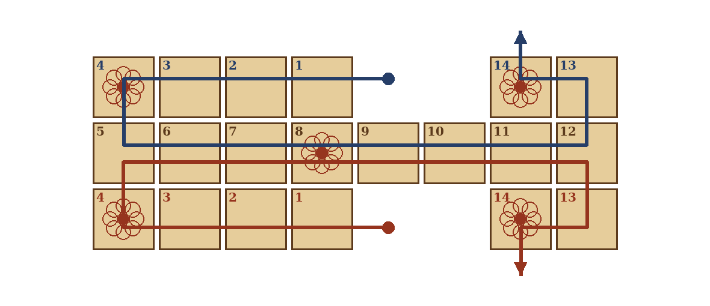
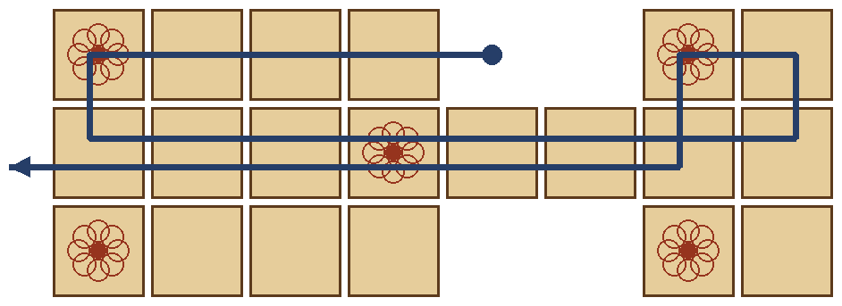
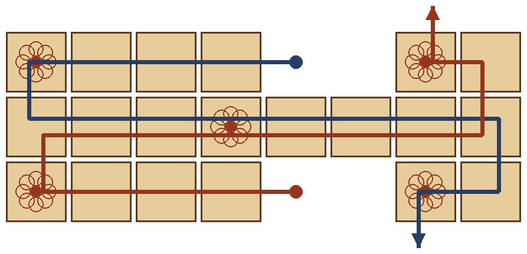
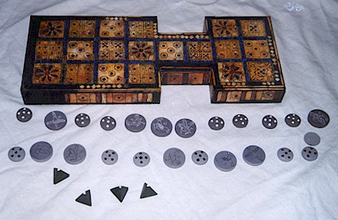
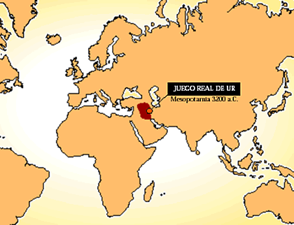
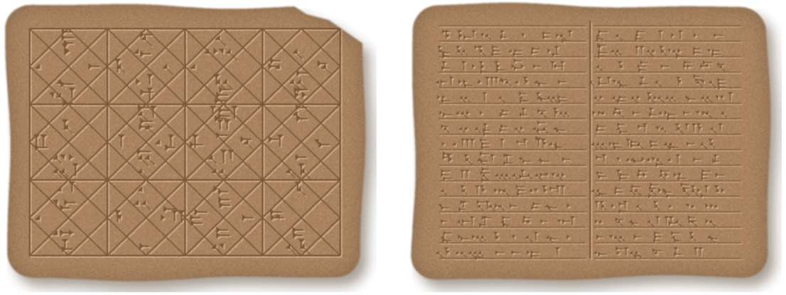
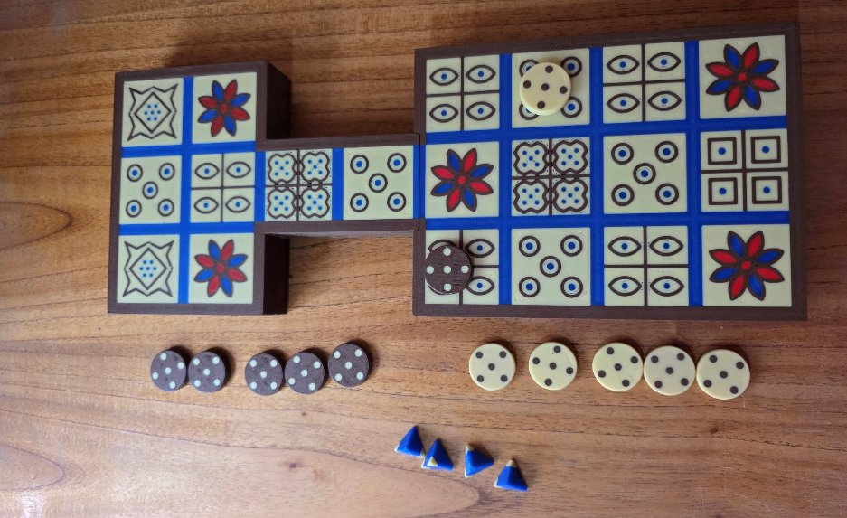
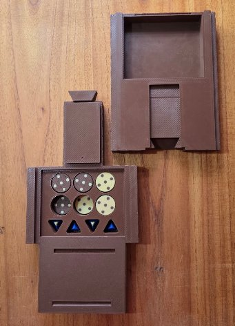
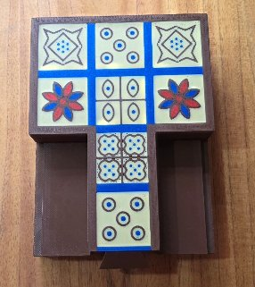
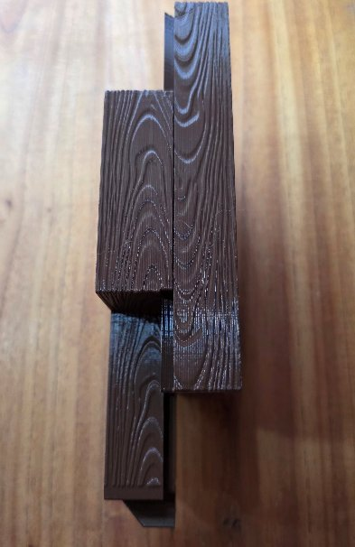

3DNQN · Juegos antiguos
Real de Ur
El juego de mesa de la antigua Mesopotamia
2 jugadores
◆ ❁ ◆
Tenés en tus manos una edición del Real de Ur diseñada e impresa en 3D. Acá encontrás el manual completo para leer desde el celular o descargar, un resumen para empezar a jugar ya mismo y la historia de uno de los juegos de mesa más antiguos del mundo.
Las reglas en un minuto
- Juego para 2 jugadores.
- Cada jugador tiene 7 fichas y debe llevarlas por un recorrido de 14 casillas hasta sacarlas del tablero.
- En cada turno se tiran los 4 dados y se avanza una ficha tantas casillas como caras marcadas salgan. Con cero se pierde el turno.
- Si caés justo sobre una ficha rival en el centro del tablero, la mandás de vuelta al inicio.
- Las rosetas son casillas seguras y dan un tiro extra.
- Para sacar una ficha hace falta el número exacto. Gana quien saque primero sus 7 fichas.
El tablero y el recorrido
Cada jugador tiene un carril propio de seis casillas: cuatro de entrada y dos de llegada. Las ocho casillas del centro son compartidas: ahí se cruzan las fichas de ambos y es donde se producen las capturas. Cada ficha recorre 14 casillas y luego sale del tablero.

Contenido
- Un tablero de 20 casillas, con cinco rosetas.
- 14 fichas: siete de un color para cada jugador.
- 4 dados piramidales, como los originales: cada pirámide tiene cuatro puntas y dos están marcadas. Si se pierde alguno, sirven cuatro monedas o fichas con una cara marcada.
Los dados
Se lanzan los cuatro dados juntos y se cuentan cuántos quedan con la punta marcada hacia arriba. Ese número es la cantidad de casillas que avanza la ficha elegida.
| Puntas marcadas | 0 | 1 | 2 | 3 | 4 |
|---|---|---|---|---|---|
| Avance | pierde | 1 | 2 | 3 | 4 |
| Probabilidad | 1/16 | 4/16 | 6/16 | 4/16 | 1/16 |
Reglamento
- Quién empieza. Cada jugador lanza los dados; el que obtiene más puntos abre la partida. Si hay empate, se vuelve a lanzar.
- El turno. En cada turno se lanza una vez y se mueve una sola ficha exactamente esa cantidad de casillas hacia adelante. Se puede avanzar una ficha que ya está en juego o hacer entrar una nueva: con un 3, por ejemplo, la ficha nueva cae en la casilla 3.
- Una ficha por casilla. Nunca puede haber dos fichas en la misma casilla, y no se puede caer sobre una ficha propia.
- Captura. Si una ficha termina su movimiento justo sobre una ficha rival, la captura: la rival vuelve a la mano de su dueño y debe empezar el recorrido desde cero. Como los carriles son privados, las capturas sólo ocurren en el centro.
- Las rosetas. Son casillas seguras: una ficha parada en una roseta no puede ser capturada. Además, quien cae en una roseta lanza otra vez y puede mover la misma ficha u otra distinta.
- Sin retroceso. Las fichas sólo avanzan. Si los dados dan cero, o si ninguna ficha tiene un movimiento válido, se pierde el turno.
- Salir del tablero. Para sacar una ficha hace falta el número exacto: desde la casilla 14 se necesita un 1, desde la 13 un 2, y así sucesivamente. Con un número menor la ficha puede acercarse si la casilla está libre; con uno mayor, esa ficha no puede moverse.
- Victoria. Gana el primer jugador que saque sus siete fichas del tablero.
Consejos
- Partida corta: tres fichas por jugador. Más rápida e ideal para chicos.
- La roseta central (casilla 8) es la más valiosa: una ficha ahí bloquea el paso del rival y está a salvo. Conviene ocuparla temprano y sostenerla.
- Cuidado con la distancia 2: el resultado más probable de los dados es un 2, así que una ficha con una rival dos casillas detrás está en el mayor peligro.
Otros recorridos
Como las tablillas antiguas no explican por completo el camino de las fichas, historiadores y ludólogos propusieron distintos recorridos sobre el mismo tablero. El de este manual es el más simple, pero se pueden armar otros: el resto del reglamento se mantiene igual y sólo cambia el camino.
Ida y vuelta por el centro

La ficha recorre su carril (1 a 4), cruza el centro hacia el extremo (5 a 12), pasa por las dos casillas finales de su lado (13 y 14) y vuelve por el centro hasta salir por el comienzo del tablero (15 a 21). Son 21 casillas: las fichas se cruzan dos veces en el centro y la roseta central se pisa a la ida y a la vuelta.
El cruce

Igual que el recorrido clásico, pero al final del centro cada ficha termina en las dos casillas del carril rival (13 y 14) en lugar del propio. Así las capturas también pueden ocurrir al final de la carrera, y la roseta de llegada pasa a ser disputada.
Armá tu propio camino
- Ambos jugadores deben recorrer la misma cantidad de casillas, con caminos en espejo.
- Conviene que las casillas del centro sean compartidas: ahí está la emoción de las capturas.
- Antes de empezar, marquen el camino con una ficha de prueba y acuerden dónde se entra y por dónde se sale.
- A mayor recorrido, partida más larga: con caminos largos se puede jugar con menos fichas.
Un poco de historia
El Real Juego de Ur es, junto con el Senet egipcio, el juego de mesa más antiguo del que se tiene conocimiento, y ambos son considerados antecesores lejanos del backgammon. Salió a la luz en las excavaciones que el arqueólogo británico Sir Leonard Woolley inició en 1922 en la necrópolis real de Ur, la gran ciudad sumeria del sur de la Baja Mesopotamia, en el actual Irak. El cementerio reunía unas 1.850 tumbas, utilizadas aproximadamente entre el 2650 y el 2050 a. C.

A lo largo de las excavaciones aparecieron varios tableros y piezas dentro de las tumbas, lo que hace pensar que los sumerios acostumbraban enterrarlo junto a sus muertos para que tuvieran con qué entretenerse durante la eternidad. Uno de los mejor conservados se exhibe hoy en el British Museum: está hecho en madera, con incrustaciones de concha, lapislázuli y caliza roja fijadas con betún.

Su éxito fue enorme. Se encontraron tableros desde las costas del Mediterráneo hasta la India, e incluso grabados sobre los grandes toros alados de piedra que custodiaban el palacio asirio de Khorsabad. Se jugó durante cerca de tres mil años, y una variante llegó viva hasta el siglo XX entre la comunidad judía de Kochi, en el sur de la India.
La tablilla que reveló las reglas
Durante siglos nadie supo cómo se jugaba. La clave apareció en la propia colección del British Museum: la tablilla de arcilla BM 33333B, escrita en cuneiforme en Babilonia por el escriba Itti-Marduk-balāṭu el 3 de noviembre del año 177 a. C. Había sido desenterrada hacia 1880 y, un siglo después, el curador Irving Finkel descubrió que su reverso contenía las reglas del juego de las veinte casillas.
El texto habla de cinco fichas con nombres de aves —golondrina, pájaro de tormenta, cuervo, gallo y águila—, de tabas de oveja y de buey usadas como dados, de las tiradas necesarias para entrar al tablero y de las rosetas, que daban premio a quien caía en ellas y castigo a quien las pasaba de largo; incluso se apostaba. Las reglas están incompletas y describen una versión tardía del juego, así que la forma en que se juega hoy es una reconstrucción de Finkel, que combina la tablilla con los hallazgos de Ur. Este manual presenta una versión propia de esa reconstrucción.

Esta edición

Esta versión del Real de Ur fue diseñada e impresa en 3D por 3DNQN. Respeta el dibujo de las veinte casillas del tablero original y lo convierte en un juego pensado para usarse y guardarse:
- Para 2 jugadores.
- Desarmable y encastrable: el tablero se separa en piezas que encajan entre sí y, cerrado, queda compacto como una caja.
- Compartimientos internos para guardar las 14 fichas y los 4 dados.
- Código QR en la caja que lleva a esta página.


